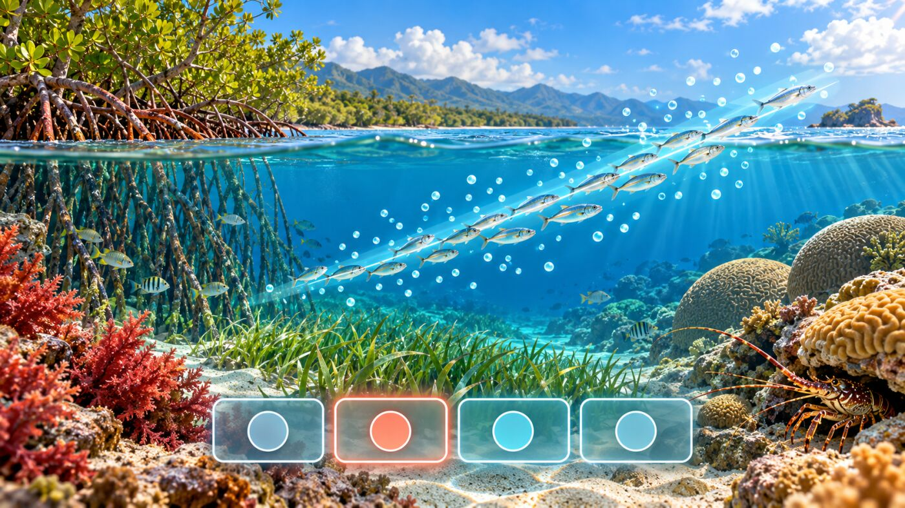

Cuestionario · Regresión Lineal Simple y Múltiple
Bioestadística y Diseño Experimental · Semana 2 · 2026-II
Instrucciones
Este cuestionario acompaña el Taller · Regresión Lineal Simple y Múltiple en R y cierra el bloque de regresión de la Semana 2. Son 12 preguntas de opción múltiple basadas en las Partes 1 a 8 del taller: correlación vs. regresión, regresión simple y transformación log-log, diagnóstico de supuestos y observaciones influyentes, regresión múltiple y coeficientes parciales, multicolinealidad (VIF), selección de modelos con AIC y el estudio de caso de la relación talla-peso de la langosta espinosa.
Cada pregunta tiene una pista opcional y, al responder, una explicación breve; se recomienda usarlas para repasar, no solo para obtener una calificación. El orden de las opciones cambia en cada intento.
Pregunta 1 de 12
Referencias
Las preguntas y escenarios de este cuestionario son de elaboración propia para este curso; no reproducen ejercicios ni datos de las fuentes citadas en el taller.